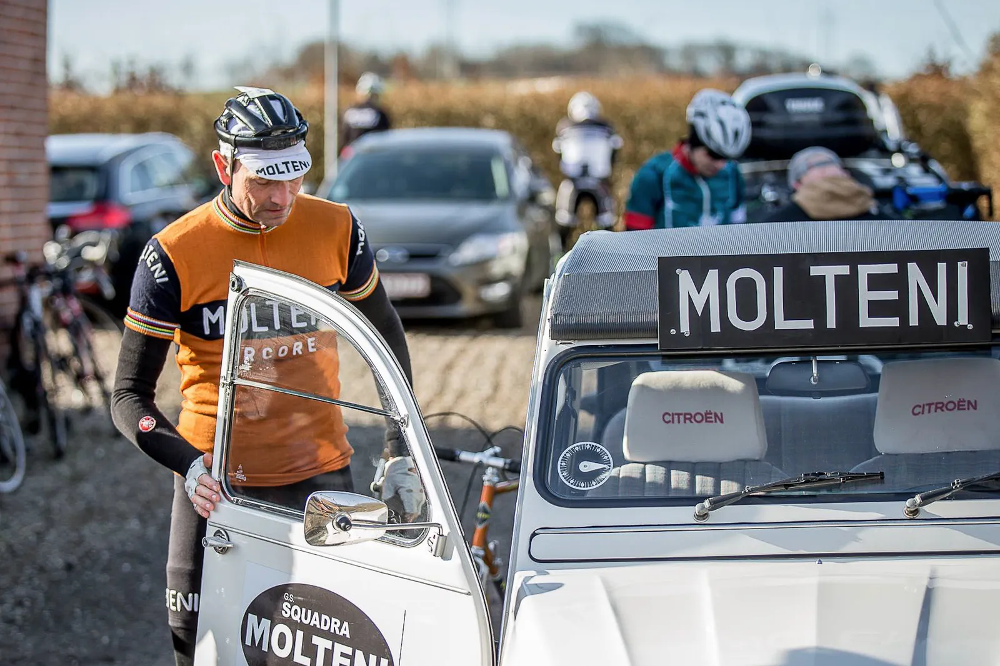
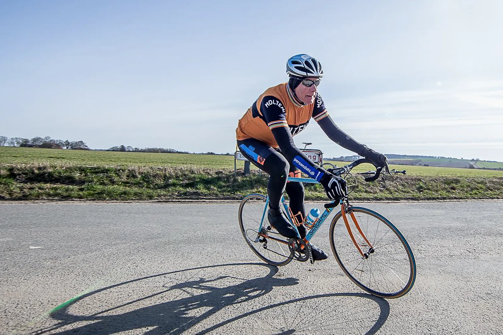

En forårsdag i Østjylland: Ronde Van Borum 2015

Ronde Van Borum 2015: Det er en kold og klar morgen. Niels og Eigil tager turen fra Vejle til Skivholme ved Borum i Squadra Moltenis teambil. 2CV spændt op til lir’. Forårsklassikeren Ronde Van Borum venter forude.
Eigil har kaffen med og navigerer fint efter kort – så 2CV’en kan holde sig til hoved- og landeveje. For langsom til motorvej.
Start- og målområdet for Ronde van Borum 2015 er lagt i den lille landsby Skivholme, der består af en snes huse. Og et forsamlingshus, der også udgør det for indskrivnings- og opholdssted. Rigtig ægte autentisk sted – og belgisk forårsklassikerstemning.

Ronde Van Borum 2015 er gennemtænkt til mindste detalje
Til tonerne af Squadra Molteni teambilens “Tour de France horn”, får lov til parkere lige ved siden af forsamlingshuset. Klods op af målstregen. Tak Uggi.
Der er tænk på alt. Indskrivningen går glat. Der er toiletforhold, rundstykker, goodie bags med energigel, energidrik og energibar. Og selvklæbende rygnummer. Vi er meget imponerede. Selv kalder Uggi det for er en hyldest til forårsklassikerne.
De andre Squadra Molteni ryttere kommer til.
- Per Sandahl på den smukke Gulf-racer.
- Kasper Sørensen på sin Eddy Merckx Replika’s jomfrutur.
- Finn Birk på sin lækre Eddy Merckx.
Det er pisse koldt, men solen skinner. Det er forår og sæsonstart. Vi er klar!
Starte går og holdet splintres
Starten går – og før Ronde Van Borum 2015 kan sætte rigtigt i gang, skal der køres én omgang efter masterbil. Ruten består af lidt flat op-og-ned, to opkørsler og to nedkørsler. Ikke afskrækende – men hårdt nok. 9 x 7 km venter forude.
Niels Bjørnsteen og Per Sandahl ryger i første gruppe efter masteromgangen. Men de hurtigste 30 får hurtigt revet feltet over.

Per resignerer ned i 3. gruppe, hvor Eigil og Kasper sidder. De tre får etableret sig dér, men Kasper må udgå med defekt på 8. omgang.
Niels bliver i 2. gruppe, hvor han tager sin del af læsset. Finn får kæmpet sig flot igennem. Efter løbet er der liv og stemning i målområdet. Aller er trætte, glade og tilfredse.
Skraldepræmie og øl og fritter i forsamlingshuset


Der er lækre sandwich, belgisk øl og pomfritter i forsamlingshuset. Skønt. Udenfor er der præmieoverrækkelse. Forårssolen skinner dejligt varmt. Endnu mere skønt.
Niels vinder “skralde-præmien” for to gange at have smidt brugte gels lige foran løbsdirektøren. 3 flasker vin. Uhmmm.
Tak. Ronde van Borum – en ny dansk forårsklassiker, med skønne referencer til Ronde van Flanderen, er født. En perfekt fødsel.
Et løb af stor klasse. Både arrangementmæssigt og rutemæssigt. Tak. Ronde van Borum *****
Resultater fra Ronde Van Borum 2015
- Plac. 51 – Niels Bjørnsteen, 02:14:02, 33.1 km/h Plac. 65
- Per Sandahl, 02:18:10, 32.1 km/h Plac. 66
- Eigil Leegard, 02:18:11, 32.1 km/h Plac. 121
- Finn Birk, 02:47:06, 26.6 km/h
- DNF Kasper Sørensen